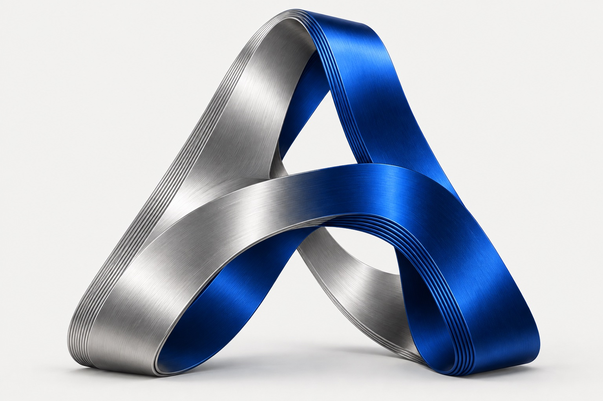

Сначала задача.
Потом инструменты.
Выбираем технологии и визуальные приёмы под продукт, аудиторию и ограничения.
Студия / Acor Web
Мы — команда, в которой дизайн и разработка разговаривают на одном языке. Создаём цифровые продукты с характером и понятной логикой.

СМЫСЛ × ФОРМА × ТЕХНОЛОГИИНаш подход
Нам важно понять, почему продукт должен появиться. Что он изменит. Кто будет им пользоваться. Из этого рождаются решения, которые не нужно объяснять длинной презентацией.
Выбираем технологии и визуальные приёмы под продукт, аудиторию и ограничения.
Показываем промежуточные результаты и объясняем, как пришли к ним.
Типографика, скорость, доступность и обратная связь — одинаково важные части опыта.
Наблюдения студии
Короткие заметки о структуре, визуальном языке и поведении цифровых продуктов.
Сначала раскладываем задачу на решения и сценарии. Когда путь пользователя ясен, визуальный стиль получает опору и не превращается в декорацию.
Переход, задержка или смена цвета полезны, когда объясняют связь между состояниями. Мы убираем эффект, если он не помогает понять следующий шаг.
Запуск — начало наблюдений. Смотрим на реальные сценарии, собираем обратную связь и развиваем продукт там, где это заметно людям.